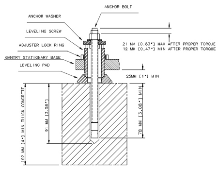
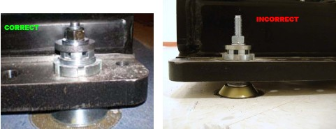
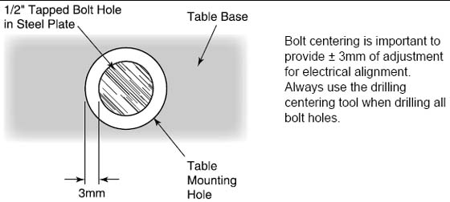

Operating Documentation
Direction 5193574-800, Rev# 22
LightSpeed 7.X Service Methods
Module Version 2.0, Version Date 6/28/11
Operating Documentation |
| Required Persons | Preliminary Reqs | Procedure | Finalization |
|---|---|---|---|
| 1 (FE or mechanical supplier) | Not Applicable | 15 mins | Not Applicable |
Notes to Mechanical Installers
Note 1: Basic Anchoring Information
GE-provided floor anchors are designed for use ONLY on concrete floors that meet the 102 mm (4 in.) concrete floor requirement. Supplied floor anchors must be installed by a trained contractor, and set to a minimum depth of 3 in. at each anchor point. ANY anchors having more than 21mm of thread showing above the nut when torque is set to 75 ± 6 N-m (55 ± 5 ft.-lb.), shall have a second anchor installed in the closest adjacent hole. This is because the minimum anchor engagement length in the concrete was not met. The second anchor shall be installed to the standard depth and torque specification. Do not cut anchor bolts that extend longer than the 1 in. limit.
Note 2: Alternate Anchoring
If at least four anchors cannot be set for the gantry, and at least four anchors for the table using the alternate anchor holes, then the installer must inform the PMI that the minimum anchoring cannot be met. Additionally, the customer’s structural engineering contractor must be engaged to determine the anchoring method, set the anchors, and certify that their anchoring meets the stated GE minimum load requirement and torque specification.
Note 3: Non-Concrete Floors
All other anchoring methods-on floor types other than the concrete minimum-must be determined at the customer's expense by a structural engineering contractor. The anchoring and method must be certified by the customer’s contractor to meet the stated GE minimum load requirement and torque specification.
Note 4: GE Notification
It is not the role of mechanical contractors or installers (FEs) to determine acceptable methods to install or anchor equipment on non-4 in. (102 mm) concrete floors. The PMI or appropriate GE contact person shall be notified that the facility's floor type DOES NOT MEET the installation mounting requirement for the installation procedure (described in this Installation Manual), and therefore the table-gantry mounting process CANNOT continue.
| Item | Qty | Effectivity | Part# | Manufacturer | |
|---|---|---|---|---|---|
| Standard Install Tool Kit | 1 | - | - | - | |
| PPE | - | - | - | ||
| 10 mm Hex wrench | 1 | - | - | - | |
| 14 mm Hex wrench | 1 | - | - | - | |
| ||||
| POTENTIAL FOR PATIENT INJURY. | ||||
| IMPROPERLY SECURED TABLE MAY TIP, DISLODGING PATIENT. | ||||
| PROPER ANCHORING IS KEY TO MAINTAINING PATIENT SAFETY DURING SYSTEM OPERATION. |
Recommended: Use “Hilti Kwik-Bolt II” anchors P/N 2106573 (½ in. dia. x 8 in. long) as shipped with the VCT/CT750 HD system for this procedure.
Illustration 1: Table Base Anchor Assembly

Illustration 2: Correct Table Base Anchor Assembly (left) vs. Incorrect Anchor Assembly (right)

Assemble the anchors before you install them. (refer to Illustration 1).
Remove the nut and washer from the anchor.
Add a ¼ in. thick washer (PN 2105873) under the regular anchor washer.
Reassemble the anchor washer and nut and position nut so the top is flush with the threads of the anchor.
Use the anchor seating tool to hammer anchors into the holes.
Adjust all eight (8) anchor bolts until tight.
No more than 21 mm (1 in.) should show above the nut.
Do not cut off the anchor.
There should be at least one full round of thread showing above the lock ring.
Complete this section on GE Form e4879.
Illustration 3: Center tapped holes under mounting holes in table base

| NOTE: | Alignment is critical. Recheck carefully. |
Turn on the alignment tool and recheck alignments. The table alignment must be the same as in the Cradle/Table Parallel Check. If re-leveling is required, repeat this procedure. Using the bubble levels, make adjustments to maintain the required alignment.
Measure distance from the table center white line perpendicular to the floor. This distance must be 1005mm± 2mm. Ensure the table is still level.
Once alignment is verified, torque all mounting bolts.
Tighten the location #1 through #8 anchors and torque to 75 ± 6 N-m (55 ± 5 ft.-lb.)
Mark the laser locations at 1000mm.
Remove the laser tools.
Reinstall the table rails.
| NOTE: | If you cannot replace the lower table cover because the floor interferes, adjust all of the table and gantry levelers by half-turn increments to raise the table/gantry until the lower table covers clear the floor. Then return to the alignment sections to level the gantry, level the table, and tighten the locking rings, respectively. |
No finalization steps.